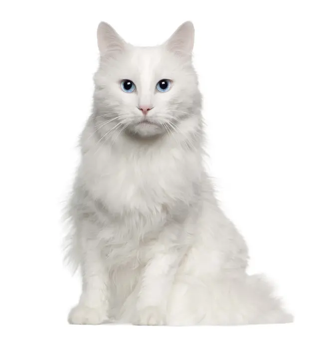

The Turkish Angora cat breed is a national treasure of its homeland Turkey. They are known for their beauty, sweetness, and social nature, and are recognizable by their white coat/sky-blue eyes combination and a fluffy, tapering tail [1], [2], [3], [4].
Appearance
Turkish Angoras are considered the ballerinas of the cat world due to their gracefulness and appearance. The usual and traditional coat color for this breed is solid white, but some Turkish Angoras can have a different coat color such as black or cream, and even a patterned coat instead of a solid one. It is similar for the eye color as well, the typical and most recognizable one is sky-blue, but some may have hazel, green, or even odd-colored eyes! They have a single-layer longhair coat with a fluffy tail and are considered medium size cats, weighing from 3kg to 5kg.
Personality
Turkish Angoras are one of the most extroverted cat breeds. They love to be the center of attention and enjoy entertaining others. They develop a strong bond with their owners and get along with children and other pets, as long as everyone knows they are the boss of the house! When it comes to guests, Turkish Angoras will be the first ones to welcome them, excitedly waiting at the entrance door! They are not shy around strangers and enjoy the new attention and entertainment from them! Turkish Angoras truly enjoy company and do not like being left home alone. They usually become stressed and anxious if they are on their own for long periods of time. This breed is quite playful and often might learn how to play chase and fetch! They are very active cats, very athletic, and top performers in agility!
History
The Turkish Angora cat breed comes from Ankara, formerly Angora, thus the breed's name. The earliest written reference to this breed is from the 16th century in France, and during the late 1800s and early 1900s, Turkish Angoras were quite popular among cat fanciers in Europe. At that time, interbreeding with the Turkish Angoras escalated to the point where pureblood Turkish Angoras nearly became extinct. Turkey considered the breed a national treasure and the government established a breeding program at the Ankara Zoo to ensure the preservation of the breed. Today, the Turkish Angora is recognized by major cat registries worldwide [1], [2], [3], [4].